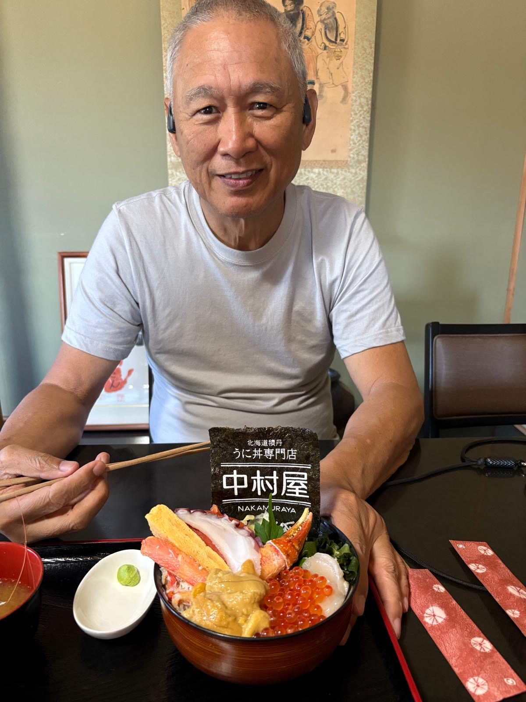
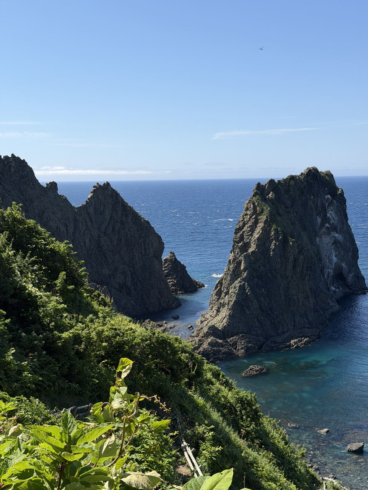

🍽️ Today's Visit今天的行程本日の訪問先
A
A. Hotel (Torifito Hotel & Pod Niseko)A. 酒店（Torifito Hotel & Pod Niseko）A. ホテル（トリフィート・ホテル＆ポッド ニセコ）
B
B. Nakamuraya (お食事処 中村屋)B. 中村屋（お食事処 中村屋）B. お食事処 中村屋
Famous Shakotan-coast spot for fresh sea urchin bowls (uni-don) and local seafood. Open mid-April to early November; closed on the 2nd & 4th Thursdays.积丹海岸著名的新鲜海胆盖饭（海胆丼）与当地海鲜名店。营业期为4月中旬至11月初；每月第二、第四个周四休息。積丹海岸で人気の新鮮なウニ丼と地元海鮮のお店。営業は4月中旬〜11月上旬、第2・第4木曜が定休日。
⚠️ Map buttons use the name & address (not a pinned coordinate), so Google resolves the exact spot — safe to tap for directions.地图按钮使用名称和地址（非固定坐标），由 Google 自行定位到确切位置 — 可放心点击导航。地図ボタンは座標ではなく店名・住所を使用しているため、Google が正確な場所を特定します — 安心してタップできます。
📔 Photo Journal照片日记フォトジャーナル

16 Jul 20262026年7月16日2026年7月16日Photo 1 of 2 · Nakamuraya お食事処 中村屋照片 1 / 2 · お食事処 中村屋写真 1 / 2 · お食事処 中村屋
Lunch at Nakamuraya, the Shakotan uni-don specialist. This is the loaded seafood bowl — creamy fresh uni (sea urchin), snow-crab legs, salmon ikura, scallop, octopus and tamago, crowned with a sheet of nori. One of the best bowls of the whole trip.在积丹海胆盖饭名店「お食事処 中村屋」吃午餐。这碗豪华海鲜盖饭 — 绵密新鲜的海胆、松叶蟹腿、三文鱼鱼籽、扇贝、章鱼和玉子烧，顶上盖着一片海苔。是整趟旅程最好吃的一碗。積丹のウニ丼専門店「お食事処 中村屋」でランチ。豪華な海鮮丼 — クリーミーで新鮮なウニ、ズワイガニの脚、サーモンのいくら、ホタテ、タコ、玉子に海苔を一枚。旅の中で一番のどんぶり。
⭐ Remember: come back here for lunch again — the uni-don at Nakamuraya is worth the drive out to Shakotan.记住：下次一定要再来这里吃午餐 — 中村屋的海胆盖饭值得专程开车来积丹。メモ：また必ずここでランチを — 中村屋のウニ丼は積丹まで来る価値あり。

16 Jul 20262026年7月16日2026年7月16日Photo 2 of 2 · Cape Kamui 神威岬照片 2 / 2 · 神威岬写真 2 / 2 · 神威岬
The view from the Cape Kamui ridge path — jagged black cliffs dropping straight into the famous "Shakotan Blue", that impossibly clear turquoise-to-deep-blue sea. A clear, calm summer day with the wind gate open all the way to the lighthouse.神威岬山脊步道上的景色 — 嶙峋的黑色峭壁直插入著名的「积丹蓝」，那清澈得不可思议、由碧绿渐深至湛蓝的海水。晴朗无风的夏日，强风闸门一路开放直到灯塔。神威岬の尾根の遊歩道からの眺め — ギザギザの黒い断崖が有名な「積丹ブルー」、信じられないほど澄んだターコイズから濃紺へと変わる海へまっすぐ落ちていきます。晴れて穏やかな夏の日、強風ゲートも灯台まで開放。